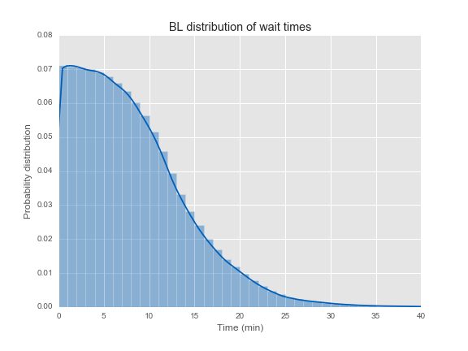

Metro Math
This presentation at:
kwkelly.com/pres/metro-pres/
- Keith Kelly
- kwkelly.com
- mail@kwkelly.com
- @KeithKelly
- kwkelly
Analysis Map
Train Positions → Train Headways → Passenger Waiting Times

Getting Headways
Estimating Wait Times
